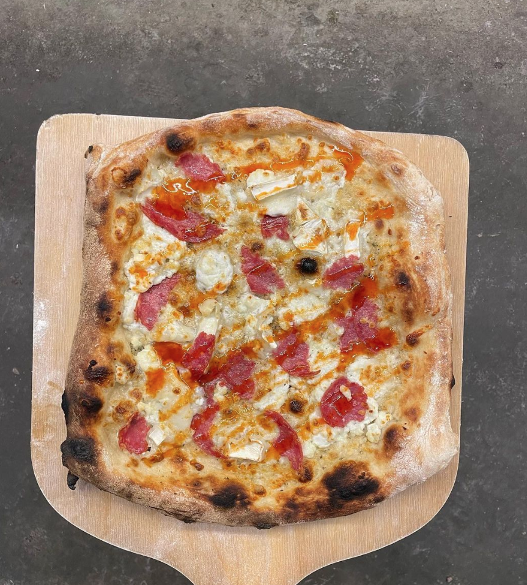

<!DOCTYPE html>
<html lang="en"></html>
<html>
    <a href="Page2.html"> Page 2</a>
<header>
    <h1> Easy flatbread pizza</h1>
    </header>
<body>
<p> <h3>Everybody loves a pizza (right?!) so here's my quick and easy recipe for a tasty pizza, everytime!</h3></p>


<p>What you'll need:</p>
<ol> - SR flour</ol>
<ol> - Greek or natural yoghurt</ol>
<ol> - Pinch of salt</ol>


<p></p>
<h2>The fun bit:</h2>

<ul> - Chuck all the ingredients in a bowl & mix together </ul>
<ul> - Roll out the dough on a floured surface nice and thin. The thinner the better as it will bounce back.</ul>
<ul> - Fry the base in a dry pan for 2/3mins each side</ul>
<ul> - Cover in all the tasty toppings of your choice</ul>
<ul> - Cook for 8 mins at 180 degrees</ul>
<ul> - Eat and enjoy!</ul>
<p>

</p>
</body>

  
  <footer>Made by Grace in the year 2022</footer>
